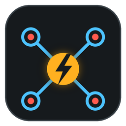

PON FleetLooking for PON Fleet...
PON Fleet is the control server for all your PON Lab Pis, so it has to be started first.
bash start-fleet.sh in this folder.sudo ./install.sh in this folder.PON Fleet running on a different Pi? Type its address:
This page keeps checking and jumps to PON Fleet as soon as it's running here.